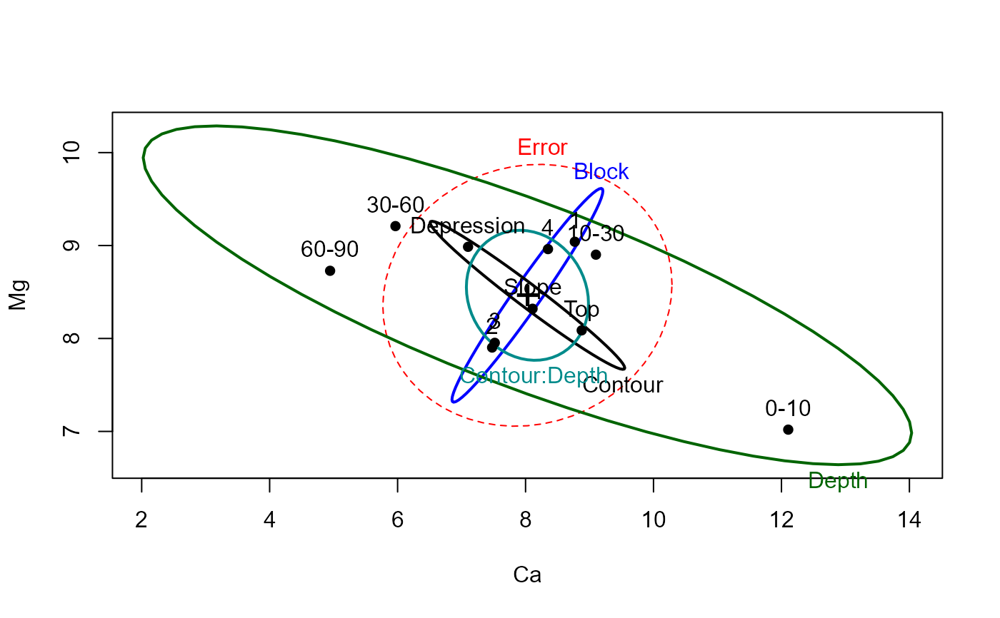
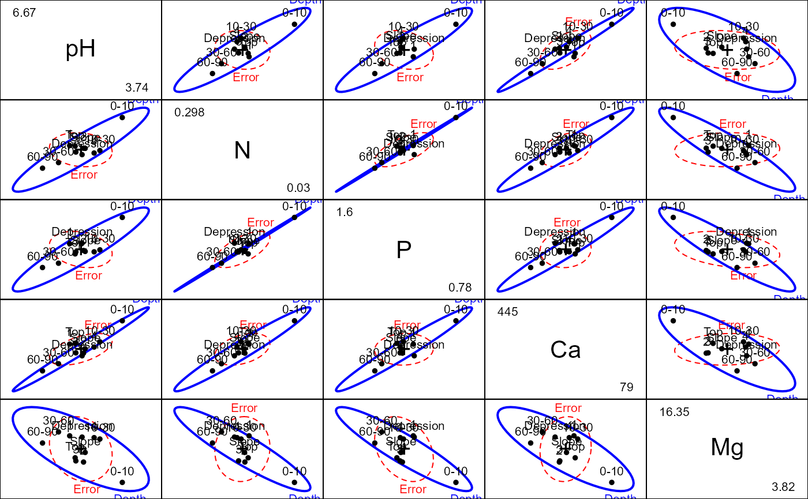

heplot3d.RdThis function plots ellipsoids in 3D representing the hypothesis and error sums-of-squares-and-products matrices for terms and linear hypotheses in a multivariate linear model.
heplot3d(mod, ...)
# S3 method for mlm
heplot3d(mod, terms, hypotheses, term.labels = TRUE,
hyp.labels = TRUE, err.label="Error", variables = 1:3, error.ellipsoid = !add,
factor.means = !add, grand.mean = !add, remove.intercept = TRUE,
type = c("II", "III", "2", "3"), idata=NULL, idesign=NULL,
icontrasts=c("contr.sum", "contr.poly"), imatrix=NULL, iterm=NULL,
manova, size = c("evidence", "effect.size"),
level = 0.68, alpha = 0.05, segments = 40,
col=getOption("heplot3d.colors",
c("red", "blue", "black", "darkgreen",
"darkcyan","magenta", "brown","darkgray")),
lwd=c(1, 4),
shade=TRUE, shade.alpha=0.2, wire=c(TRUE,FALSE),
bg.col = c("white", "black"),
fogtype = c("none", "exp2", "linear", "exp"),
fov = 30, offset = 0.01,
xlab, ylab, zlab, xlim, ylim, zlim,
cex.label = 1.5,
add = FALSE, verbose = FALSE,
warn.rank = FALSE, ...)a model object of class "mlm".
a logical value or character vector of terms in the model
for which to plot
hypothesis matrices; if missing or TRUE, defaults to all terms;
if FALSE, no terms are plotted.
optional list of linear hypotheses for which to plot hypothesis
matrices; hypotheses are specified as for the
linearHypothesis function in the car package;
the list elements can be named, in which case the names are used.
logical value or character vector of names for the terms to be
plotted. If TRUE (the default) the names of the terms are used;
if FALSE, term labels are not plotted.
logical value or character vector of names for the hypotheses to
be plotted. If TRUE (the default) the names of components of the list of
hypotheses are used; if FALSE, hypothesis labels are not plotted.
Label for the error ellipse
indices or names of the three response variables to be plotted;
defaults to 1:3.
if TRUE, plot the error ellipsoid; defaults to TRUE,
if the argument add is FALSE (see below).
logical value or character vector of names of
factors for which the means
are to be plotted, or TRUE or FALSE; defaults to TRUE,
if the argument add is FALSE (see below).
if TRUE, plot the centroid for all of the data;
defaults to TRUE,
if the argument add is FALSE (see below).
if TRUE (the default), do not plot the
ellipsoid for the intercept even if it is in the MANOVA table.
``type'' of sum-of-squares-and-products matrices to compute; one of
"II", "III", "2", or "3", where "II" is
the default (and "2" is a synonym).
an optional data frame giving a factor or factors defining the
intra-subject model for multivariate repeated-measures data.
See Details of Anova for an explanation of the intra-subject design and for further explanation
of the other arguments relating to intra-subject factors.
a one-sided model formula using the ``data'' in idata and specifying the intra-subject design for repeated measure models.
names of contrast-generating functions to be applied by default to factors and ordered factors, respectively, in the within-subject ``data''; the contrasts must produce an intra-subject model matrix in which different terms are orthogonal. The default is c("contr.sum", "contr.poly").
In lieu of idata and idesign, you can specify the
intra-subject design matrix directly via imatrix, in the form of list of named elements.
Each element gives
the columns of the within-subject model matrix for an intra-subject term to be tested, and must
have as many rows as there are responses; the columns of the within-subject model
matrix for different terms must be mutually orthogonal.
This functionality
requires car version 2.0 or later.
For repeated measures designs, you must specify one intra-subject term
(a character string) to select the SSPE (E) matrix used in the HE plot.
Hypothesis terms plotted include the iterm effect as well as all interactions
of iterm with terms.
optional Anova.mlm object for the model; if absent a
MANOVA is computed. Specifying the argument can therefore save
computation in repeated calls.
how to scale the hypothesis ellipsoid relative to the error
ellipsoid; if "evidence", the default, the scaling is done so that
a ``significant'' hypothesis ellipsoid extends outside of the error
ellipsoid; if "effect.size", the hypothesis ellipsoid is on the same
scale as the error ellipsoid.
equivalent coverage of ellipsoid for normally-distributed
errors, defaults to 0.68.
significance level for Roy's greatest-root test statistic; if
size="evidence", then the
hypothesis ellipsoid is scaled so that it just touches the error ellipsoid at the
specified alpha level; a larger hypothesis ellipsoid therefore indicates
statistical significance; defaults to 0.05.
number of segments composing each ellipsoid; defaults to
40.
a color or vector of colors to use in plotting ellipsoids; the first
color is used for the error ellipsoid; the remaining colors --- recycled
as necessary --- are used for the hypothesis ellipsoid.
A single color can be given, in which case it is used for all ellipsoid.
For convenience, the default colors for all heplots produced in a given session can be changed
by assigning a color vector via options(heplot3d.colors =c(...). Otherwise,
the default colors are c("pink", "blue", "black", "darkgreen", "darkcyan", "magenta", "brown", "darkgray").
a two-element vector giving the line width for drawing ellipsoids
(including those that degenerate to an ellipse) and
for drawing ellipsoids that degenerate to a line segment. The default
is c(1, 4).
a logical scalar or vector, indicating whether the ellipsoids should be
rendered with shade3d. Works like col, except that FALSE
is used for any 1 df degenerate ellipsoid.
a numeric value in the range [0,1], or a vector of such values, giving
the alpha transparency for ellipsoids rendered with shade=TRUE.
a logical scalar or vector, indicating whether the ellipsoids should be
rendered with wire3d. Works like col, except that TRUE
is used for any 1 df degenerate ellipsoid.
background colour, "white" or "black", defaulting
to "white".
type of ``fog'' to use for depth-cueing; the default is
"none". See bg.
field of view angle; controls perspective.
See viewpoint.
proportion of axes to off set labels; defaults to
0.01.
x-axis label; defaults to name of the x variable.
y-axis label; defaults to name of the y variable.
z-axis label; defaults to name of the z variable.
x-axis limits; if absent, will be computed from the data.
y-axis limits; if absent, will be computed from the data.
z-axis limits; if absent, will be computed from the data.
text size for ellipse labels
if TRUE, add to the current plot; the default is FALSE.
If TRUE, the error ellipsoid is neither plotted nor returned in the output object.
if TRUE, print the MANOVA table and details of hypothesis
tests; the default is FALSE.
if TRUE, do not suppress warnings about the rank of the
hypothesis matrix when the ellipsoid collapses to an ellipse or line;
the default is FALSE.
arguments passed from generic.
When the H matrix for a term has rank < 3, the ellipsoid collapses to an ellipse (rank(H)=2) or a line (rank(H)=1).
Rotating the plot can be particularly revealing, showing views in which H variation
is particularly large or small in relation to E variation. See play3d
and movie3d for details on creating animations.
The arguments xlim, ylim, and zlim can be used to expand the bounding
box of the axes, but cannot decrease it.
heplot3d invisibly returns a list containing the bounding boxes of the error (E)
ellipsoid and for each term or linear hypothesis specified in the call.
Each of these is a 2 x 3 matrix with rownames "min" and "max" and colnames
corresponding to the variables plotted. An additional component, center,
contains the coordinates of the centroid in the plot.
The function also leaves an object named
.frame in the global environment, containing the rgl object IDs for
the axes, axis labels, and bounding box; these are deleted and the axes, etc.
redrawn if the plot is added to.
Friendly, M. (2006). Data Ellipses, HE Plots and Reduced-Rank Displays for Multivariate Linear Models: SAS Software and Examples Journal of Statistical Software, 17(6), 1-42. https://www.jstatsoft.org/v17/i06/
Friendly, M. (2007). HE plots for Multivariate General Linear Models. Journal of Computational and Graphical Statistics, 16(2) 421-444. http://datavis.ca/papers/jcgs-heplots.pdf
Anova, linearHypothesis, for details on MANOVA tests and
linear hypotheses
heplot, pairs.mlm, for other plotting methods for mlm objects
rgl-package, for details about 3D plots with rgl
heplot3d.candisc for 3D HE plots in canonical space.
# Soils data, from car package
soils.mod <- lm(cbind(pH,N,Dens,P,Ca,Mg,K,Na,Conduc) ~ Block + Contour*Depth, data=Soils)
Anova(soils.mod)
#>
#> Type II MANOVA Tests: Pillai test statistic
#> Df test stat approx F num Df den Df Pr(>F)
#> Block 3 1.6758 3.7965 27 81 1.777e-06 ***
#> Contour 2 1.3386 5.8468 18 52 2.730e-07 ***
#> Depth 3 1.7951 4.4697 27 81 8.777e-08 ***
#> Contour:Depth 6 1.2351 0.8640 54 180 0.7311
#> ---
#> Signif. codes: 0 '***' 0.001 '**' 0.01 '*' 0.05 '.' 0.1 ' ' 1
heplot(soils.mod, variables=c("Ca", "Mg"))

pairs(soils.mod, terms="Depth", variables=c("pH", "N", "P", "Ca", "Mg"))

heplot3d(soils.mod, variables=c("Mg", "Ca", "Na"), wire=FALSE)
# Plastic data
plastic.mod <- lm(cbind(tear, gloss, opacity) ~ rate*additive, data=Plastic)
if (FALSE) {
heplot3d(plastic.mod, col=c("red", "blue", "brown", "green3"), wire=FALSE)
}